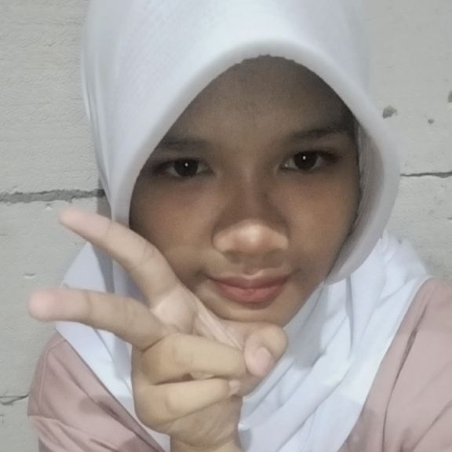

Halo,Saya Herlinda!
Siswa kelas X SMK, calon Junior Web Developer di kelas Industri UBIG.
Lihat Proyek SayaTentang Saya
Saya Sekolah di SMKN 1 JENANGAN PONOROGO, jurusan Rekayasa Perangkat Lunak.
Saya ingin mempelajari tentang Perangkat lunak lebih mendalam.
Selain itu, saya tinggal di purwosari babadan ponorogo dan sangat menyukai anime dan kpop-sudah banyak judul anime yang saya tonton.
Hobi
- Menggambar
- membaca komik
- menonton anime
Cita-Cita
menjadi Full stack web Developer. langkah yang saya rencanakan
- Mempelajari perangkat lunak
- Mengikuti kelas Industri UBIG
- Magang di perusahaan teknologi
- Bekerja sebagai Web Developer
Keahlian
- Git dan GitHub (sedang dipelajari)
- HTML dan CSS dasar(sedang dipelajari)
- Menggambar Manual
Jadwal Belajar
| Hari | Waktu | Kegiatan |
|---|---|---|
| Selasa | 20:00 - 20:30 | Membaca Modul |
| Rabu | 19:00 - 20:00 | Mengerjakan praktik |
| Kamis | 20:30 - 21:00 | Membuat Video presentasi |